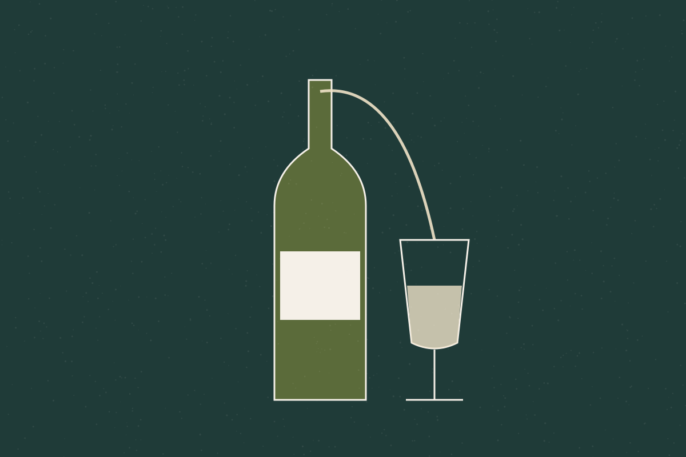

Carta de otoño · Provisional
La cocina
Recetas vascas de siempre, revisadas con mirada de hoy. La carta cambia con la temporada y depende de lo que llega cada mañana. Platos, ingredientes y precios de esta página son ficticios.
A la carta
Carta de temporada
Precios orientativos en euros, IVA incluido. Provisional
Para toda la mesa
Menú degustación
Siete pasos que recorren la carta de la temporada. Se sirve a mesas completas.
72 € por persona Provisional
Maridaje opcional con txakoli, sidra y vinos de pequeños productores: 38 €.
Gilda de la casa
Anchoa, piparra y aceituna.
Tomate de huerta y bonito curado
Frío, ácido y salino.
Alubia roja y berza
El guiso del caserío, en pequeño.
Kokotxas al pilpil verde
Cazuela de barro, emulsión suave.
Merluza de anzuelo
Salsa verde y almejas.
Pichón al txakoli
Brasa y jugo reducido.
Pantxineta tibia
Almendra tostada y crema.

Bodega
Una bodega corta y con sentido
Txakoli de las tres denominaciones vascas, sidra natural y una selección breve de vinos de pequeños productores del norte. Preferimos pocas referencias bien elegidas.
Las referencias concretas se publicarán cuando la carta de vinos sea definitiva.
¿Te apetece probarla?
Envíanos una solicitud y te responderemos para confirmar disponibilidad.